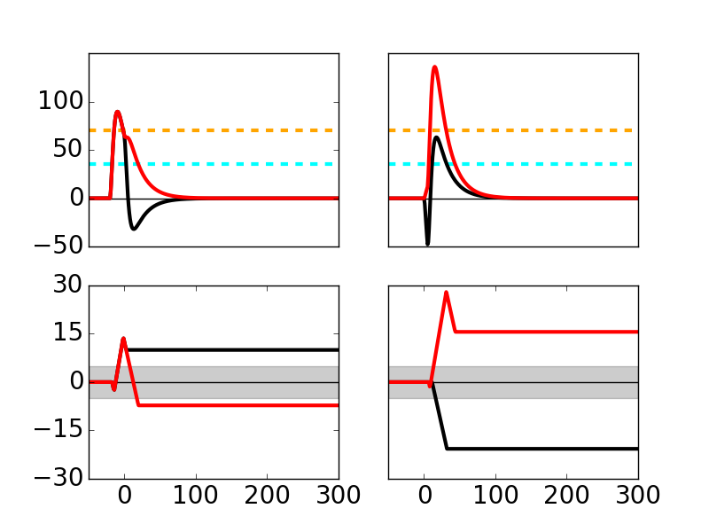
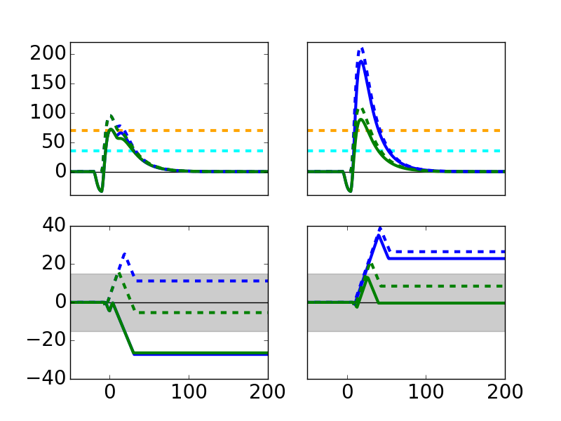

The code for the main simulations of the paper:
Hiratani N, Fukai T (2017) Detailed Dendritic Excitatory/Inhibitory
Balance through Heterosynaptic Spike-Timing-Dependent Plasticity. J
Neurosci 37:12106-12122
are available at the authors web site (and from this repository in modeldb):
https://github.com/nhiratani/hstdp
Running these commands produces the following graphs similar to paper figures 2B and 2D respectively:
python cotricostriatal.py

python schaffercollateral.py
